Дизайн-проект
Альбом из 31 листа формата А3 для бригады: визуализации по комнатам, исходный план и монтаж перегородки, мебель с привязками и проходами, двери и окна, сантехнические выводы, потолки, освещение и выключатели, розетки, полы, отделка стен, развёртки стен, схемы кухни и шкафов. Всё собрано из той же модели, что 3D и план, поэтому размеры совпадают.
Нажмите на лист — PDF откроется сразу на нём. Мебель условная, модели подбираются отдельно; сечения кабелей, автоматы и трассы труб — ориентир для электрика и сантехника.
Общее
Обложка, ведомость листов и общие указания для бригады.
Визуализации
По два вида на каждую комнату и короткое описание: что где стоит и как включается свет.
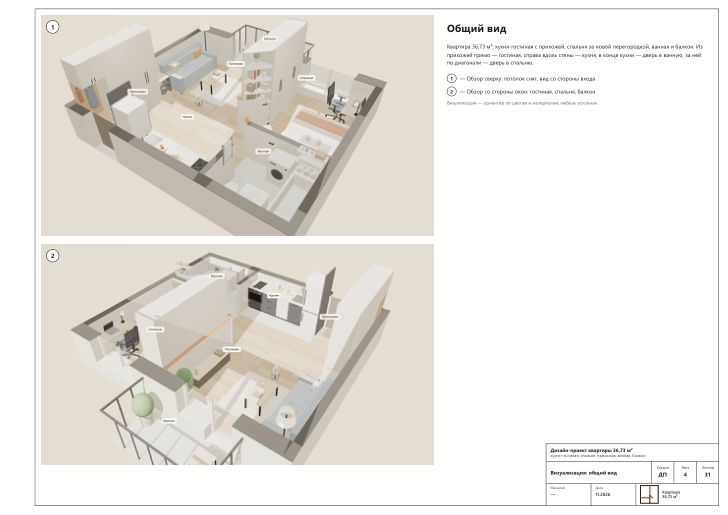
4Визуализация: общий вид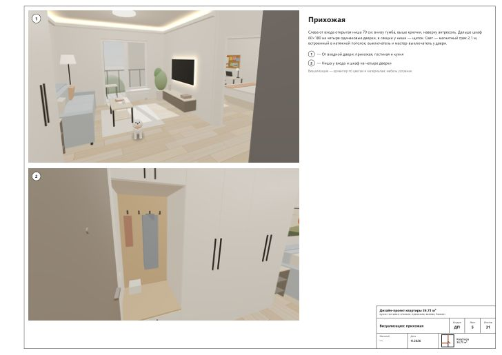
5Визуализация: прихожая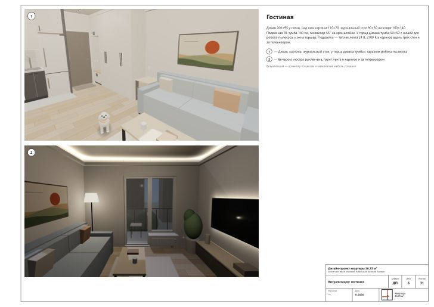
6Визуализация: гостиная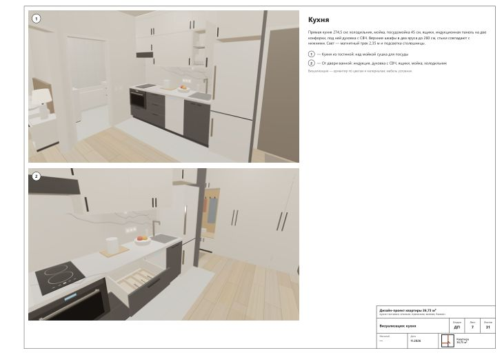
7Визуализация: кухня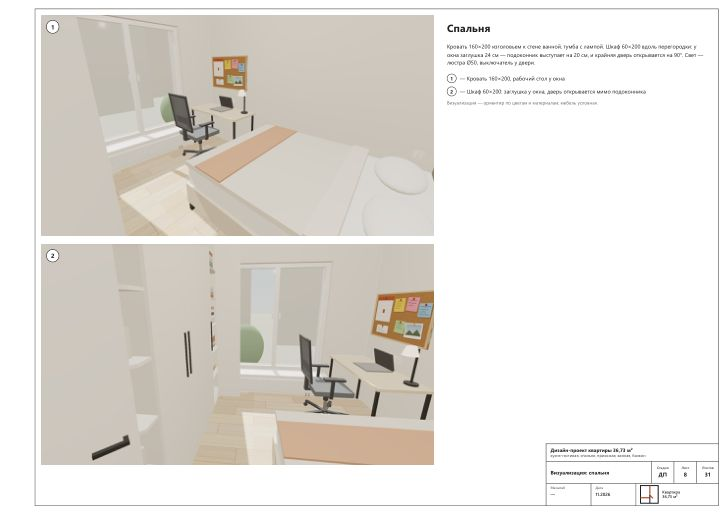
8Визуализация: спальня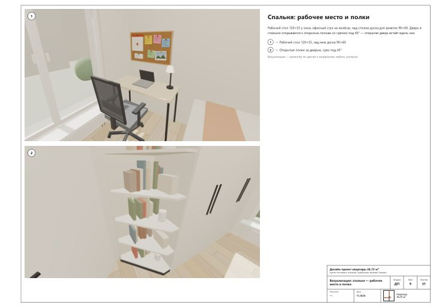
9Визуализация: спальня — рабочее место и полки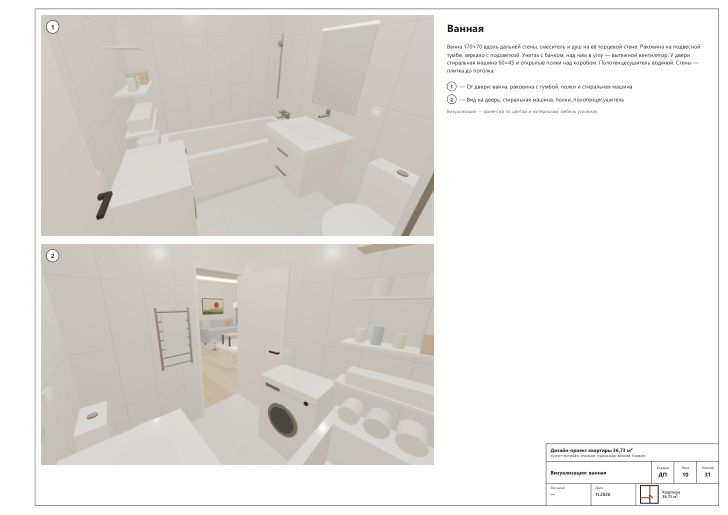
10Визуализация: ванная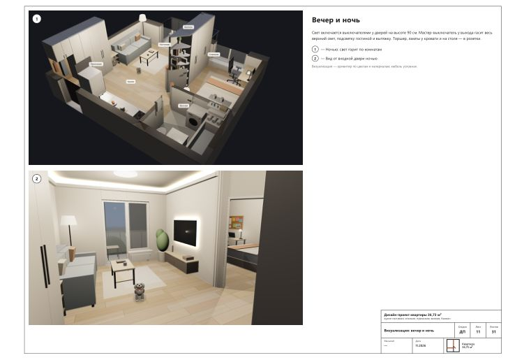
11Визуализация: вечер и ночь
Планы и схемы
Масштаб 1:40, размеры в миллиметрах по чистовым стенам, высоты — от чистого пола.
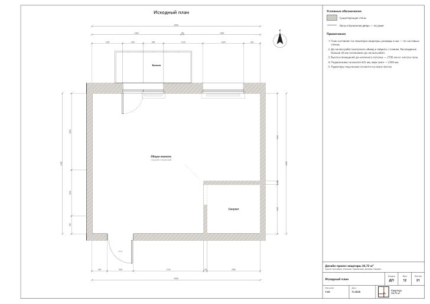
12Исходный план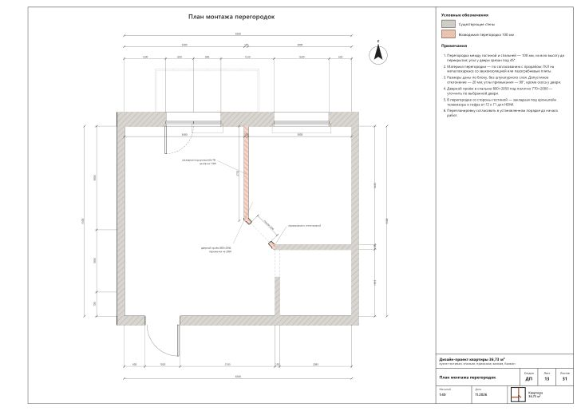
13План монтажа перегородок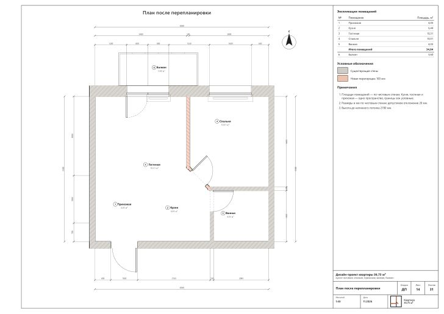
14План после перепланировки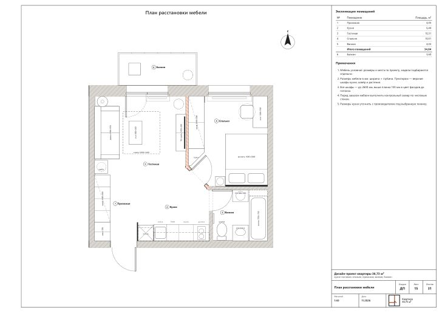
15План расстановки мебели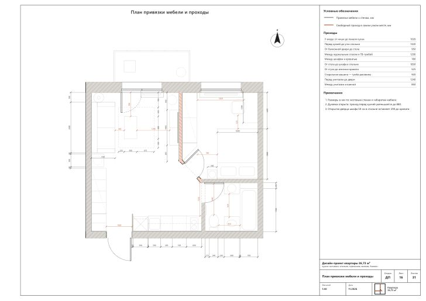
16План привязки мебели и проходы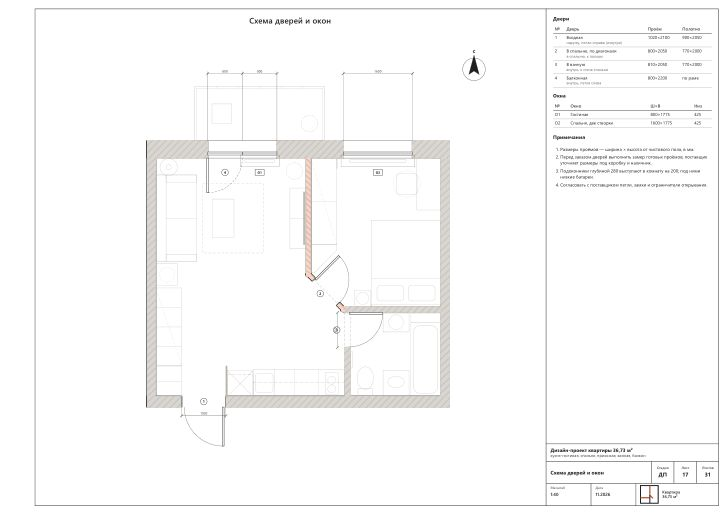
17Схема дверей и окон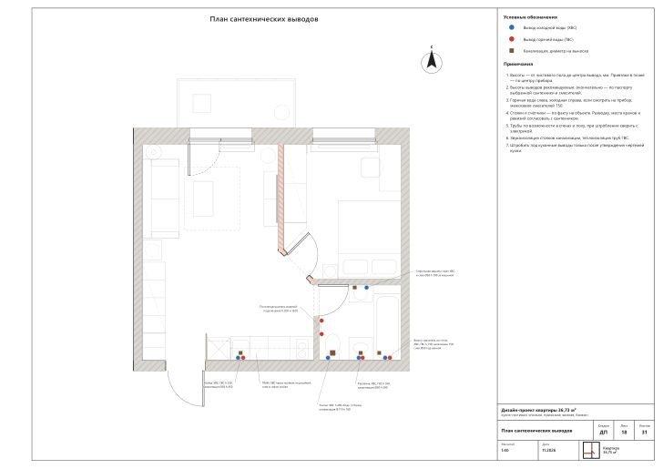
18План сантехнических выводов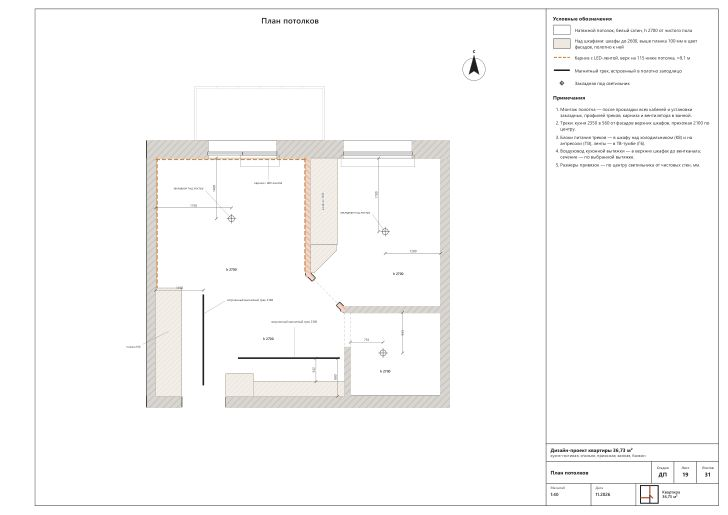
19План потолков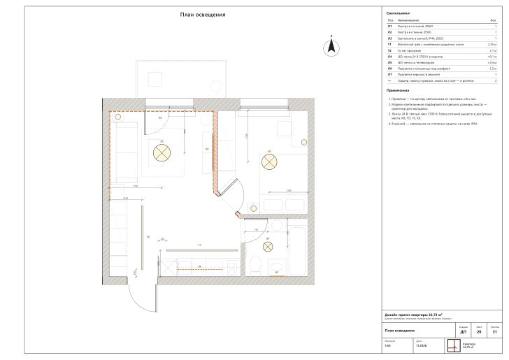
20План освещения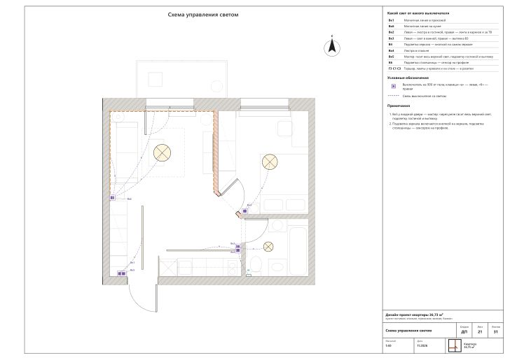
21Схема управления светом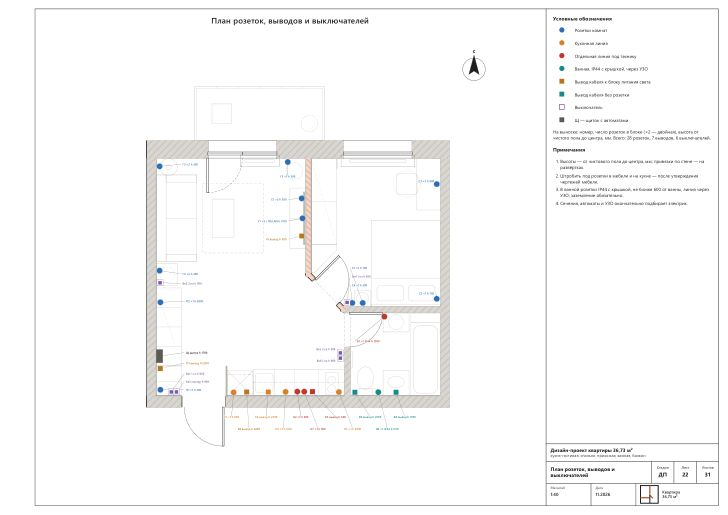
22План розеток, выводов и выключателей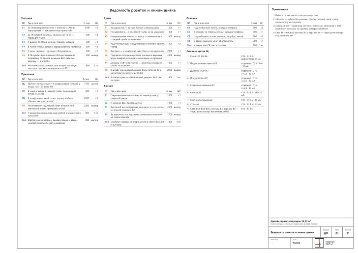
23Ведомость розеток и линии щитка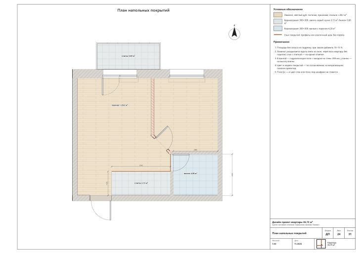
24План напольных покрытий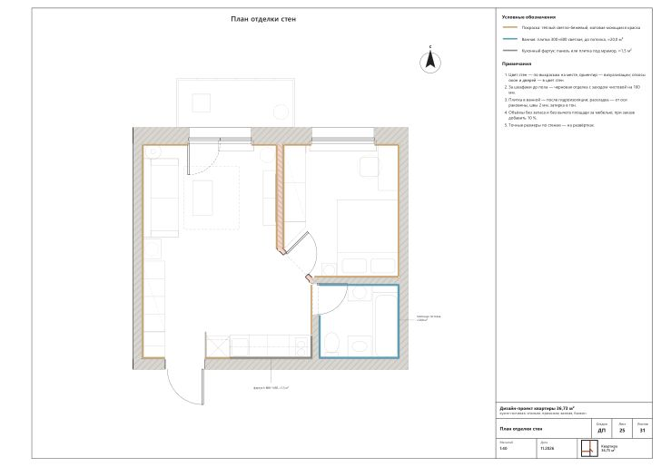
25План отделки стен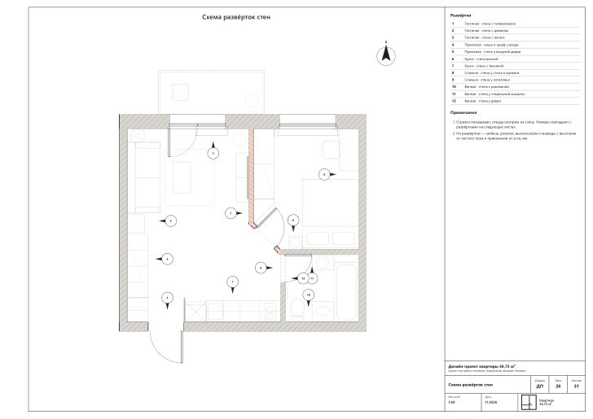
26Схема развёрток стен
Развёртки, кухня и шкафы
Двенадцать стен с розетками и выключателями, фасады и наполнение кухни и шкафов.